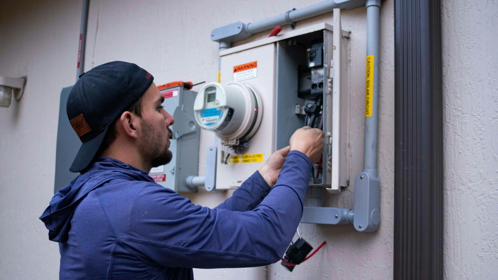

Professional or DIY Smart Home? Choosing the Right Approach
DIY is great for a single device. Here is when a professionally designed system is the better choice.
RTI control systems
RTI puts the whole room, or the whole property, on one remote, touchpanel or app. Island Integration is an authorized RTI dealer based in Nassau: we design, install and program RTI systems and look after the ones already in Bahamian homes.

RTI (Remote Technologies Incorporated) builds control systems for people who want one simple way to run their entertainment, lighting, climate, shades and cameras. A single handheld remote replaces the pile on the coffee table. A touchpanel on the wall or the RTiPanel app on a phone shows the same clear buttons. Behind them, an RTI control processor talks to the TV, the audio system, the cable or streaming box, the lights and the thermostats, so Watch TV or Goodnight is one press.
What makes RTI different is how much of it is custom. Every screen, button and macro is programmed by the dealer in RTI’s Integration Designer software, so the system is built around your equipment and the way your household uses it. That also means the quality of an RTI system depends on the programmer. As an authorized RTI dealer, installer and programmer, Island Integration designs new RTI systems and services, reprograms and upgrades existing ones across New Providence and the Family Islands.
How we work
We list what needs to be controlled in each room and who uses it, then choose between a single-room remote system and a whole-home processor with touchpanels and keypads.
RTI screens are fully custom. We agree the activities, button names and layout before programming, so the finished remote makes sense to the family, guests and staff.
Processors and control wiring go in a ventilated rack, devices are connected and tested, and the system is programmed and checked activity by activity.
We walk you through the system, then return to adjust buttons and macros once you have lived with it. Small changes later are quick because the program stays on file with us.
Designed for the islands
Yes. Island Integration is an authorized RTI dealer, installer and programmer based in Nassau, serving New Providence and the Family Islands.
Yes. We service and reprogram existing RTI systems. See RTI service and maintenance for how a takeover works.
Both are professional systems. RTI is highly customizable and strong for entertainment-led control with a great handheld remote; Control4 suits whole-home automation with many subsystems. We work with both and will recommend what fits the property.
Usually. RTI controls most televisions, receivers, streaming devices and cable boxes by IP, serial or infrared. We check your equipment list before quoting.
Related services

DIY is great for a single device. Here is when a professionally designed system is the better choice.
Smart lighting, climate, security, entertainment, and the Control4 hub that ties it all together.

Screen size, projection, surround sound, lighting and wiring: what to know for a truly cinematic room.
Tell us about your property and goals, and we’ll recommend the right approach.